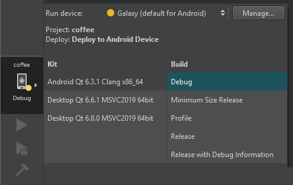
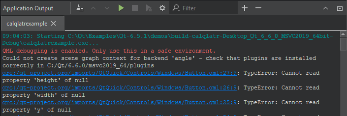

Run on many platforms
By default, running an application also builds it and deploys it to a location from where it can run on the desktop, on a device emulator or simulator, or on a device that is connected to the computer.
Run applications
To run applications:
- Select the Build and Run Kit Selector icon or go to Build > Open Build and Run Kit Selector to select the build and run kit.

- Select
 (Run).
(Run).
Run on mobile and embedded devices
If you have connected mobile devices or embedded devices to the computer or added virtual devices, such as Android Virtual Devices (AVD), you can select them in the kit selector.
Select Manage to manage device settings. For example, you can add AVDs or manually start disconnected AVDs.
Select run targets
If your project has several run targets defined, such as tests, you can select them in the kit selector.
Run without deploying
To run executable files without deploying them first, select Build > Run Without Deployment.
To make this the default option, go to Preferences > Build & Run > General, and clear Always deploy project before running it.
Run without building
Application Output displays the status of the application while it is running.

Select (Run) to re-run applications without building them first.
This is useful when developing Qt Quick applications because the QML files are interpreted at runtime. Therefore, the application does not need to be built again if you edited only QML files. This saves time especially if the application has large image files that would need to be bundled into the resource file before running the application.
See also Configure projects for running, Customize the build process, Run on QNX devices, Run on remote Linux devices, Run Python applications, and Supported Platforms.